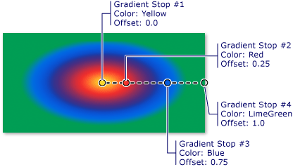

Практическое руководство. Закраска области с применением радиального градиента
В этом примере показано, как использовать RadialGradientBrush класс для закраски области с применением радиального градиента.
Пример
В следующем примере используется RadialGradientBrush для закрашивания прямоугольника с применением радиального градиента, которая переходит с желтого красного, синего и зеленого.
using System;
using System.Windows;
using System.Windows.Controls;
using System.Windows.Input;
using System.Windows.Media;
using System.Windows.Media.Animation;
using System.Windows.Shapes;
namespace BrushesIntroduction
{
public class RadialGradientBrushSnippet : Page
{
public RadialGradientBrushSnippet()
{
Title = "RadialGradientBrush Example";
Background = Brushes.White;
Margin = new Thickness(20);
//
// Create a RadialGradientBrush with four gradient stops.
//
RadialGradientBrush radialGradient = new RadialGradientBrush();
// Set the GradientOrigin to the center of the area being painted.
radialGradient.GradientOrigin = new Point(0.5, 0.5);
// Set the gradient center to the center of the area being painted.
radialGradient.Center = new Point(0.5, 0.5);
// Set the radius of the gradient circle so that it extends to
// the edges of the area being painted.
radialGradient.RadiusX = 0.5;
radialGradient.RadiusY = 0.5;
// Create four gradient stops.
radialGradient.GradientStops.Add(new GradientStop(Colors.Yellow, 0.0));
radialGradient.GradientStops.Add(new GradientStop(Colors.Red, 0.25));
radialGradient.GradientStops.Add(new GradientStop(Colors.Blue, 0.75));
radialGradient.GradientStops.Add(new GradientStop(Colors.LimeGreen, 1.0));
// Freeze the brush (make it unmodifiable) for performance benefits.
radialGradient.Freeze();
// Create a rectangle and paint it with the
// RadialGradientBrush.
Rectangle aRectangle = new Rectangle();
aRectangle.Width = 200;
aRectangle.Height = 100;
aRectangle.Fill = radialGradient;
StackPanel mainPanel = new StackPanel();
mainPanel.Children.Add(aRectangle);
Content = mainPanel;
}
}
}
<Page
xmlns="http://schemas.microsoft.com/winfx/2006/xaml/presentation"
xmlns:x="http://schemas.microsoft.com/winfx/2006/xaml"
Title="RadialGradientBrush Example"
Background="White" Margin="20">
<StackPanel>
<!-- This rectangle is painted with a radial gradient. -->
<Rectangle Width="200" Height="100">
<Rectangle.Fill>
<RadialGradientBrush
GradientOrigin="0.5,0.5"
Center="0.5,0.5" RadiusX="0.5" RadiusY="0.5">
<RadialGradientBrush.GradientStops>
<GradientStop Color="Yellow" Offset="0" />
<GradientStop Color="Red" Offset="0.25" />
<GradientStop Color="Blue" Offset="0.75" />
<GradientStop Color="LimeGreen" Offset="1" />
</RadialGradientBrush.GradientStops>
</RadialGradientBrush>
</Rectangle.Fill>
</Rectangle>
</StackPanel>
</Page>
На рисунке показан градиент из предыдущего примера. Выделены градиента.

Note
В примерах в этом разделе используется система координат по умолчанию для задания точек управления. Система координат по умолчанию определяется относительно ограничивающего прямоугольника: 0 указывает 0 процентов ограничивающего прямоугольника, а 1 указывает 100 процентов ограничивающего прямоугольника. Эту систему координат можно изменить, задав MappingMode в соответствии с значением Absolute. Абсолютная система координат не привязана к ограничивающему прямоугольнику. Значения интерпретируются непосредственно в локальной области.
Для дополнительных RadialGradientBrush примеры, см. в разделе пример использования кистей. Дополнительные сведения о градиенты и других типов кистей см. в разделе закраске сплошным цветом и градиентом Обзор.